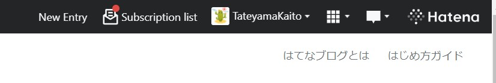

チーム開発でブログを作ろう: はじめに
この文書では、チーム開発の題材として「ブログ」をとりあげて、Web開発、特にフロントエンド、サーバサイドに関する知識をつけてもらいます。
簡単なところから説明を行うので、パソコンと作業に取り組む時間だけ確保していれば、プログラミングが得意でなくても大丈夫です。一緒に少しずつ学んでいきましょう。
進め方
基本的に番号順に章を読み進めていってください。左上の横三本の棒のボタンを押すと目次が表示/非表示されます。
章を読んで確認テストが終わったら、 こちらのGoogle form から進み具合を報告してみましょう。何か困ったことがあったら、どこまで進んだかと一緒に報告してくれると嬉しいです。
それでは、完成形のイメージの章から行ってみましょう。
確認テスト
- パソコンと作業に取り組む時間を用意しましたか？
- 進め方がイメージできましたか？
完成形のイメージ
今回作るものはブログです。Webサービスでブログが書けるものはたくさんありますが、例えば はてなブログ を見てみましょう。
「New Entry」というボタンを押すとブログの記事を新規に書き始めることができます。

以下の赤枠部分にブログの記事の文章を書いて、「Publish」ボタンを押すと記事が世の中に公開されます。

このように、ブログを作るときには以下の機能があればよさそうです。
- ブログを書く編集画面
- ブログを表示する画面
実際には会員登録の機能などが必要です。しかしここでは一旦コア機能を実装してしまってから考えることにしましょう。このように、サービスの中心的な価値を届ける最小限のプロダクトをMVP(Minimum Viable Product)ということもあります。
最小限のMVPをまず完成させることを目指しましょう。
確認テスト
- 完成形のイメージが湧きましたか？
環境構築をしよう
ここでは以下のことが達成できればOKです。
- GitHubへの登録、HiCoder Organizationへの登録
- 開発に必要なエディタの導入(VSCode)
- 開発環境のためにWSL2を導入(Windowsの人のみ)
- docker、docker-composeを導入
- 開発環境にアクセスできることを確認する
ここからひとつひとつは退屈で面倒かもしれません。ですが、必要になるので頑張っていきましょう。
また、「検索する力」が後々重要となってくるので、ここではそれも身に付けてほしいなと思っています。そのため説明はそれほど丁寧ではないです。たくさん検索をして、分からなかったらdiscordで質問を投げて、検索する力を向上させていってください。
GitHubへの登録、HiCoder Organizationへの登録
ここでは、「GitHub」という開発に使うソースコード管理プラットフォームでアカウントを作り、HiCoderの組織に属するように設定をします。
手順: GitHubへの登録
- GitHubアカウントを作ります。 https://github.com/ からSign Upしてください。usernameは実名とは別のハンドルネームが良いと思います。また、メールアドレスは公開してもよいものを使ってください。
- わからなくなったら検索してみましょう。「GitHub アカウント 作り方」などでGoogle検索をかけてみてください。
- 困ったらdiscordの雑談チャンネルで質問してみましょう。
- アカウント名は、例えば https://github.com/uta8a だと
uta8aにあたります。自分のページからアカウント名を発見してください。
これで完了です。
手順: HiCoder Organizationへの登録
- 前の 「手順: GitHubへの登録」で得たアカウント名をdiscordでHiCoderの部長に伝えてください。
- 部長がHiCoder Organizationへ入れる設定をします。
- GitHubからメールが届きます。Invitationや招待といった雰囲気のボタンを押してください。
- 確認として、https://github.com/settings/organizationsを見てみましょう。HiCoderが登録されていればOKです。
これで完了です。
確認テスト
- GitHubアカウントを作成した
- HiCoder Organizationへの登録が完了した
開発に必要なエディタの導入
ここでは、プログラムを書くための道具であるエディタを導入します。
手順
- エディタの導入をします。特にこだわりがなければVSCodeを使ってください。
- VSCodeはマイクロソフト社が主に開発している高機能なエディタです。
- ダウンロードはここからできます。 https://code.visualstudio.com/
- 以下の参考の
Visual Studio Code の準備が参考になると思います。頑張ってください。 - 参考: https://ynucpc.github.io/blog/2020/03/24/howtowsl-vscode/
- インストールできたら、実際に少し使ってみましょう。
- まず、作業フォルダを決めます。開発用のフォルダはまとめておくと後々整理しやすいです。
- 作業フォルダを決めたらその中でVSCodeを開きます。そしてファイルを作ります。
test.txtというように、テキストファイルがよいでしょう。そのテキストファイルに何か書き込んでみてください。Ctrl+Sで保存、など、ショートカットについて調べてみるのもよいと思います。 - このあたりのVSCodeの操作方法は「VSCode 操作方法」などで検索をかけるといいと思います。さきほどの参考記事( https://ynucpc.github.io/blog/2020/03/24/howtowsl-vscode/ )も役に立つでしょう。
これで完了です。
確認テスト
- エディタを導入して少し使ってみることができた。
開発環境のためにWSL2を導入
WSLの導入をします。これはWindowsの方が対象です。Macの方は次の章に進んでください。
手順
- まず、OSについて説明します。OSはパソコン(ハードウェア)の機能を使い様々なことを実現している縁の下の力持ちのようなソフトウェアです。Windows, Android, MacOS, LinuxのようにたくさんのOSがあります。その中でWindowsで開発を行うことは初心者には難易度が高く、Linuxで開発を行う方が簡単なように私は感じたので、今回はWindowsの上でLinuxを動かして、その上で開発を行います。
- つまり、開発環境としてWSL2を使います。
- https://docs.microsoft.com/ja-jp/windows/wsl/install を参考にWSLを導入してください。usernameはスペースを使わないで、短いものにすると良いと思います。例えば私は
uta8aを使っています。 - なにか困ったことがあればdiscordで質問してください。
- できたらVSCodeでフォルダを開いて、ターミナルを開いてください。そこにコマンドを打ちます。このときターミナルではUbuntuを選択してください。

sudo apt update
sudo apt upgrade
とパッケージの更新をして、
uname -a
と打ってEnterを押してみてください。画面にLinux...から始まる文字列が表示されたらOKです。このunameコマンドはOSの種類を確認するコマンドです。
確認テスト
-
WSL2を導入し、
uname -aの結果を見ることができた
docker、docker-composeを導入
ここでは、開発のために自分の手元のPCでサーバを立ち上げるために、dockerとdocker-composeというソフトウェアを導入します。
手順: Dockerの導入
- Install Docker Engine on Ubuntuを参考に、WSL2の上でコマンドを打ってdockerをインストールします。
- 確認のため、インストールを終えたら
sudo docker psとターミナルで打ってみてください。以下のように表示されたらうまくいっています。
$ sudo docker ps
[sudo] password for uta8a:
CONTAINER ID IMAGE COMMAND CREATED STATUS PORTS NAMES
トラブルシューティング: もしエラーが起きたら？
- ここは非常にエラーが色々な種類で出るので、エラーメッセージで検索してみて、15分考えて分からなければdiscordで質問してみましょう。
手順: docker-composeの導入
- docker/composeからReleasesの
docker-compose-linux-x86_64を取ってきます。アドレスをコピーしてWSL側でダウンロードしましょう。
wget https://github.com/docker/compose/releases/download/v2.1.1/docker-compose-linux-x86_64
sudo cp ./docker-compose-linux-x86_64 /usr/local/bin/docker-compose
sudo chmod +x /usr/local/bin/docker-compose
- versionコマンドで確認をします。以下のように表示されれば成功です。
$ sudo docker-compose -v
Docker Compose version v2.0.1
確認テスト
-
docker, docker-composeを導入し、
sudo docker psでの確認、sudo docker-compose -vでの確認も行った
開発環境にアクセスできることを確認する
ここでは、以下のことができればOKです。
- gitを導入し、GitHubにWSLの方でつながるようにする。
- GitHubからblogの雛形を取ってきて、WSLの方でdocker、docker-composeを用いて立ち上げる。
- npmを導入し、フロントエンドサーバを立ち上げる。
手順: gitの導入とGitHubへの疎通
- GitHubは、自分のソースコードを世界に公開するためのプラットフォームです。最近はインターンや就活で、自分はこれまでこんなことやってきました！と自分の実力や興味関心を伝える手段としても重要視されてきている気がします。積極的に使っていきましょう。
- gitにnameとemailを登録します。nameはGitHubのアカウント名、emailはGitHubに登録するときに使ったものを使ってください
git config --global user.name "自分の名前"
git config --global user.email "メール@example.com"
次にWSL側では、鍵を生成します。
mkdir ~/.ssh
cd ~/.ssh
ssh-keygen -t rsa
Nameはgithub_key, passphraseは指定しなくていいです。
~/.sshを確認します。
ls
ファイルがあればOKです。
権限を変更します
chmod 600 github_key
次に、GitHub側に公開鍵を伝えます
cat github_key.pub
出てきた内容をコピーして、GitHub>Settings>SSH and GPG keys>New SSH Keyから追加。
configを作ります
touch config
code ./config
configに書き込む内容
Host github.com
HostName github.com
PreferredAuthentications publickey
IdentityFile ~/.ssh/github_key
configの権限を変更します
chmod 600 config
sshが通るか確認します
ssh -T git@github.com
Hi <username>! You've successfully authenticated, but GitHub does not provide shell access.みたいなのが出たらOKです。お疲れさまでした。
うまくいかない場合は、エラーメッセージを調べてみて15分たっても分からなければ質問してみましょう。
手順: dockerでblogの雛形を立ち上げて確認する
blogの雛形はこちらです。hu-hicoder/blog:handson ここでは、handsonブランチを使います。
はじめに、git cloneでblogの雛形を取ってきます。
cd ~
git clone -b handson git@github.com:hu-hicoder/blog.git
cd blog
ls
以下のような表示がされていればOKです。
$ ls
blog-editor blog-public blog-style LICENSE README.md
では、続いてdocker, docker-composeを使ってプロジェクトを立ち上げます。
cd blog-public/scripts/docker/
sudo docker-compose up
以下のような表示がされていればOKです。
...(省略)...
docker-backend-1 | ____ __
docker-backend-1 | / __/___/ / ___
docker-backend-1 | / _// __/ _ \/ _ \
docker-backend-1 | /___/\__/_//_/\___/ v4.6.1
docker-backend-1 | High performance, minimalist Go web framework
docker-backend-1 | https://echo.labstack.com
docker-backend-1 | ____________________________________O/_______
docker-backend-1 | O\
docker-backend-1 | ⇨ http server started on [::]:3001
ブラウザで http://localhost:3000/ にアクセスしてみてください。以下のような表示がされていればOKです。
サーバを落とすときは、Ctrl+cで止めた後に
docker-compose down
としてください。
手順: npmを導入し、フロントエンドサーバを立ち上げる
前回のdockerではデータベース用のサーバとバックエンド用のサーバが立ち上がっています。フロントエンドだけはDockerでの開発が向かないと思われるので、別で立ち上げます。
まず、npmというフロントエンド開発のためのツールを導入します。今回はこのツールをnodebrew経由でインストールします。
curl -L git.io/nodebrew | perl - setup
code ~/.bashrc
bashrcを開いたら、以下を一番後ろに追記します。
export PATH=$HOME/.nodebrew/current/bin:$PATH
そしてターミナルで以下を実行します
source ~/.bashrc
これで設定は完了です。npmをインストールします。基本的にls, ls-remote, install-binary, useを覚えていればよいです。詳しくは公式ページを見てください。
# node,npmの検索
nodebrew ls-remote
# バージョンを選んでインストール
nodebrew install-binary v16.13.0
# ローカルで使うバージョンを指定
nodebrew use v16.13.0
インストールが成功したか確認します。
node -v
以下のように表示されていればOKです。
$ node -v
v16.13.0
別のターミナルでdocker-compose upしている状態で、もう一つターミナルを立ち上げて
cd blog-public/frontend
npm i
npm run dev
としてフロントエンドサーバを立ち上げます。ブラウザで http://localhost:8080/にアクセスし、以下のように表示されていればOKです

サーバを止めるときはCtrl+cでOKです。バックエンドのdockerも落とすことを忘れずに。
確認テスト
- gitを導入し、GitHubにつながることを確認した
- dockerでblogの雛形を立ち上げて、ブラウザでアクセスして確認した
- npmを導入して、フロントエンドサーバを立ち上げた